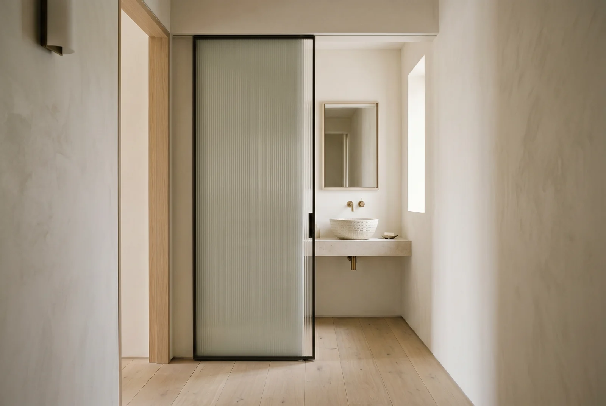
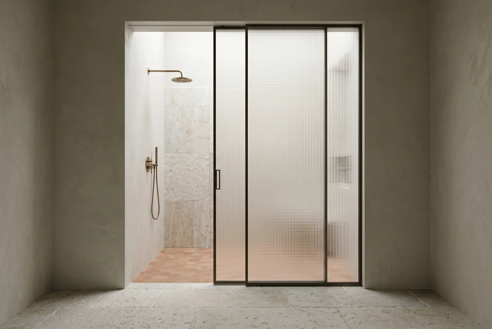
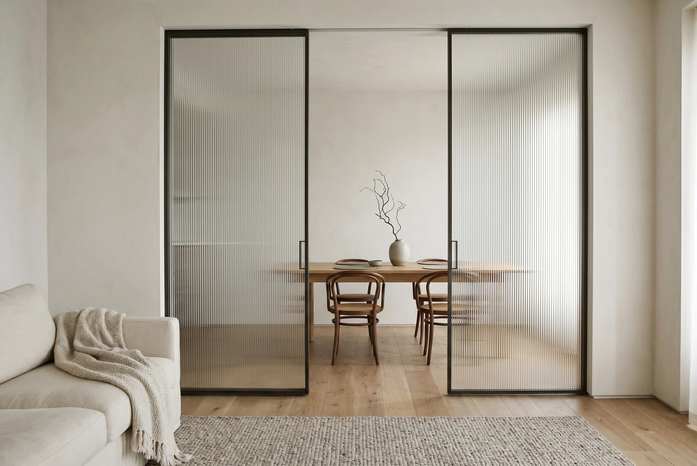
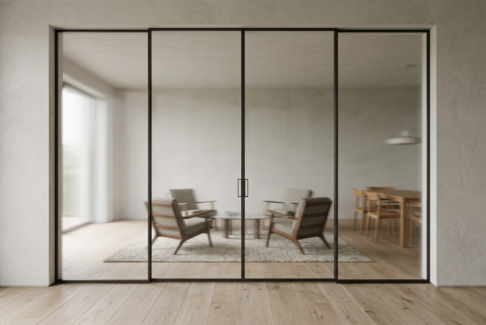
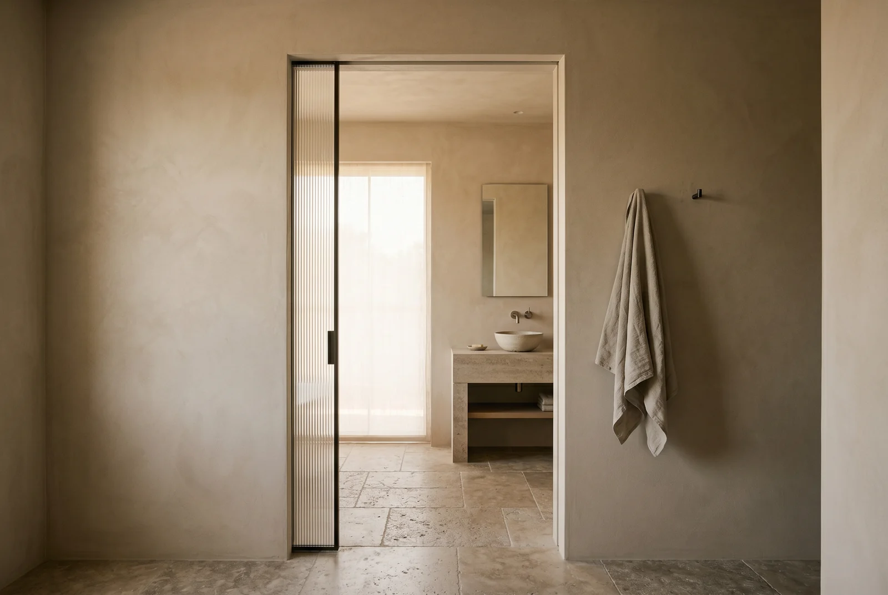

Documentacion
Recursos Tecnicos
Fichas tecnicas, guias de instalacion y documentacion para profesionales. Todo lo necesario para especificar nuestros sistemas.

Ficha tecnica
GLSS01 -- Ficha Tecnica
Puerta Corrediza Biplanar. Especificaciones, dimensiones y materiales.
Guia de instalacion
GLSS01 -- Guia de Instalacion
Instrucciones paso a paso, herramientas y tolerancias de montaje.
CAD
GLSS01 -- Archivo CAD
Planos tecnicos DWG para integracion en proyecto arquitectonico.

Ficha tecnica
GLSS02 -- Ficha Tecnica
Puerta Corrediza Monoplanar. Perfil ultra delgado de 18mm.

Ficha tecnica
GLSS03 -- Ficha Tecnica
Puerta Abatible con Bisagra. Cierre magnetico suave.

Guia de instalacion
GLSS04 -- Guia de Instalacion
Montaje de particion modular. Conexiones y uniones entre paneles.

Ficha tecnica
GLSS05 -- Ficha Tecnica
Fachada Structural Glazing. Vidrio insulado de alto rendimiento.

Descargas generales